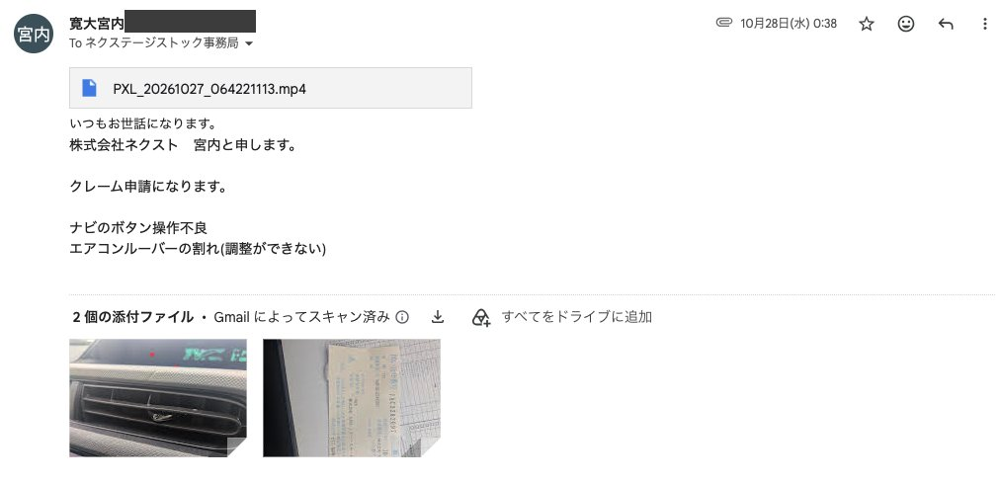

単元21
仕入れ後の手続きとクレーム申請
この単元のゴール案
仕入れ後の報告とクレーム申請の流れが分かる
含む内容：手続き、仕入れ先へのクレーム申請
この単元の詳しいマニュアルは作成予定です（サンプルは単元9・13・20）。
5-6仕入れた後の手続き
- 5-6-1
業販登録：出品票をグループLINE「全社車両仕入れ連絡」に共有して報告する（定型文は8章）
- 5-6-2
陸送・入庫・整備の手配は6-1章へ
- 5-6-3
業販車両の代金は、ドライブの請求書を確認し、請求日から60日以内に支払う（8章）
5-7仕入れ先へのクレーム申請
- 5-7-1
渡部社長のポイント
クレーム申請はデリケートなので、新人ではなく上長以上が担当する。新人がやると「ネクストグループはそんなことも知らないのか」となり、やぶ蛇になる
- 5-7-2
ネクステージ業販の場合：メールと電話の両方で申請する
- メール：件名は「車体番号下4桁、車種、クレーム申請、クレーム現象」。宛先は nextage.stock@nextage.jp。陸送の伝票があれば添付する 図5-E
- メールを送ったあと、電話する（052-228-8975）
- 電話のトーク例：
お世話になります。株式会社ネクストの〇〇と申します。ネクステージストックのクレーム申請の件でお電話させていただきました。〇月〇日に落札させていただいた、車体番号〇〇〇〇の〇〇ですが、このような現象が起きております。メールの方にも送信させていただいてますので、ご確認の上、ご連絡よろしくお願いいたします

図5-Eネクステージへのクレーム申請メールの例。現象を書き、写真・動画を添付する - 5-7-3
オークション（USS・オークネットなど）のクレーム申請の方法 確認中：未提出
教育担当者のチェック
押すと印が付きます。この端末のブラウザにだけ保存されます。正式な記録は印刷したチェックリストに書いてください。